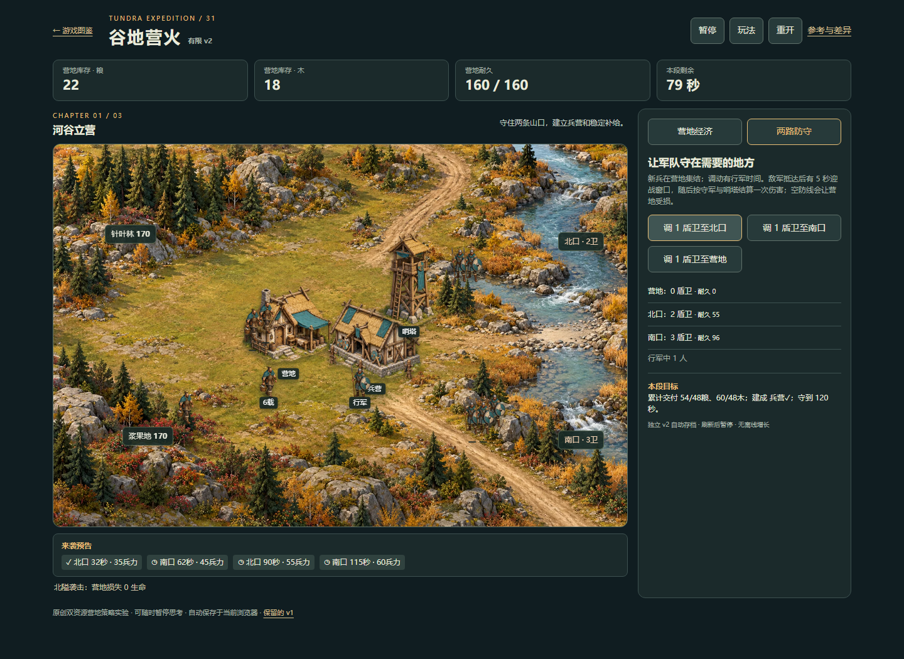
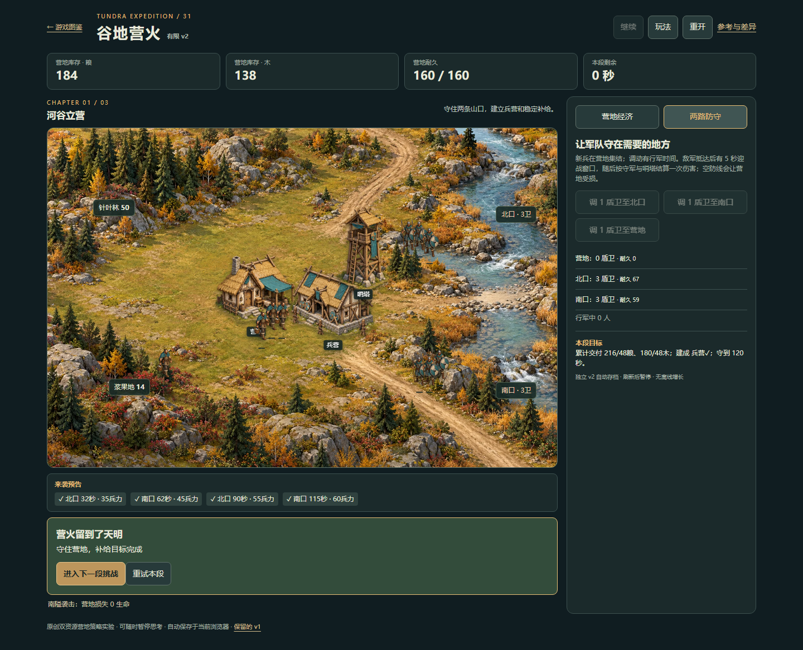
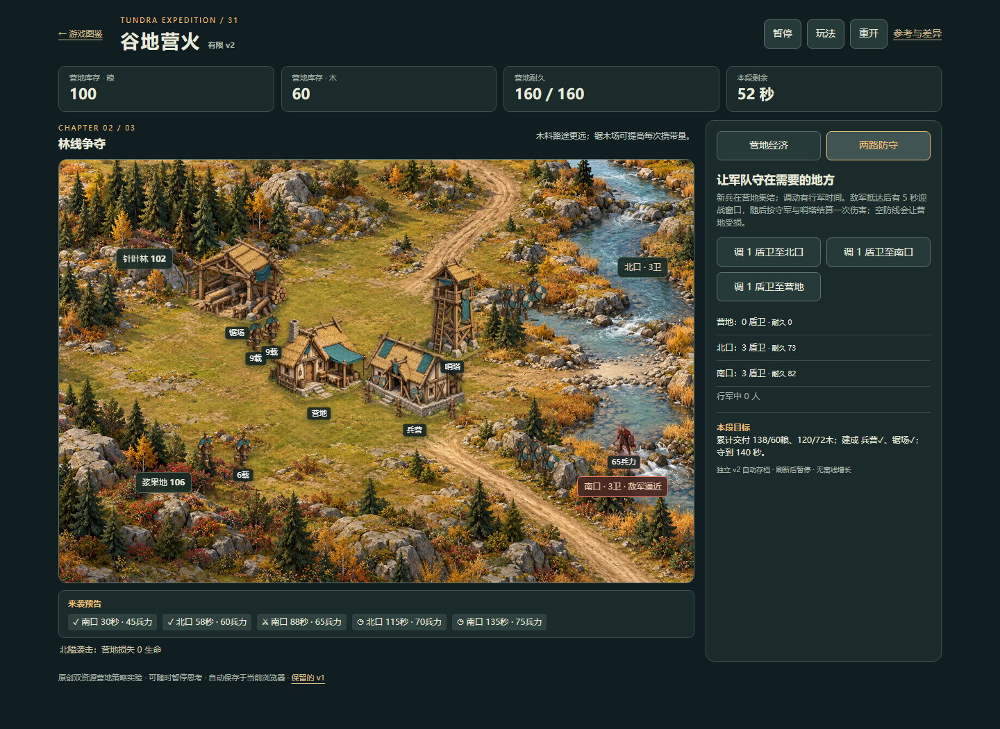
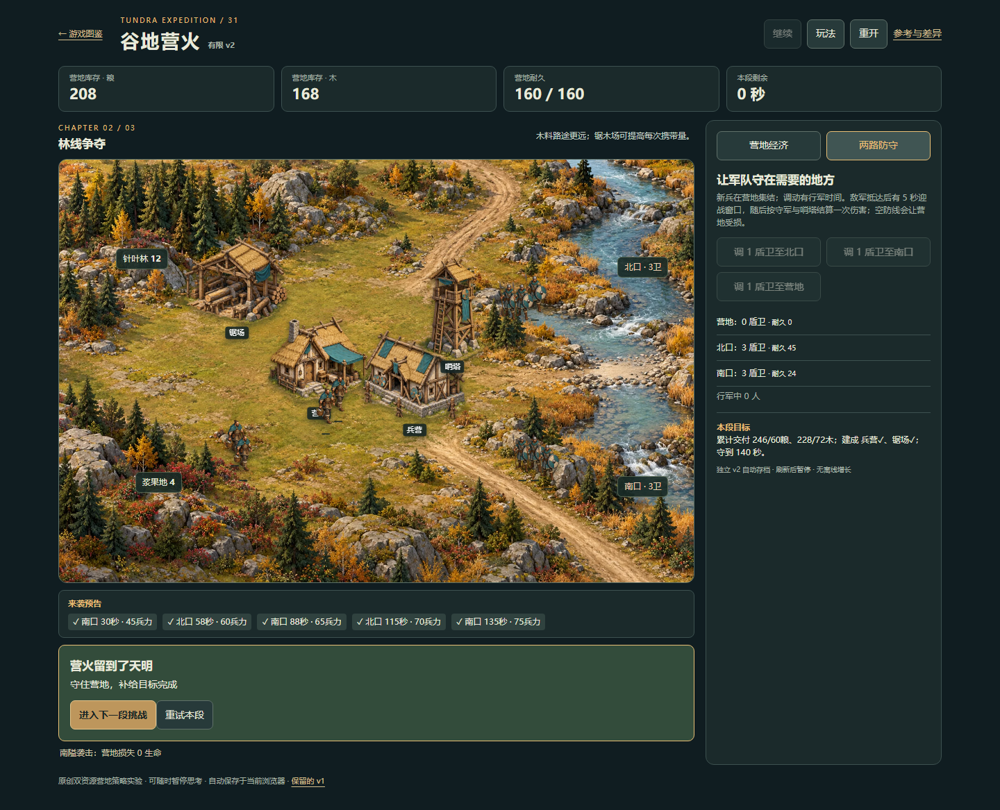
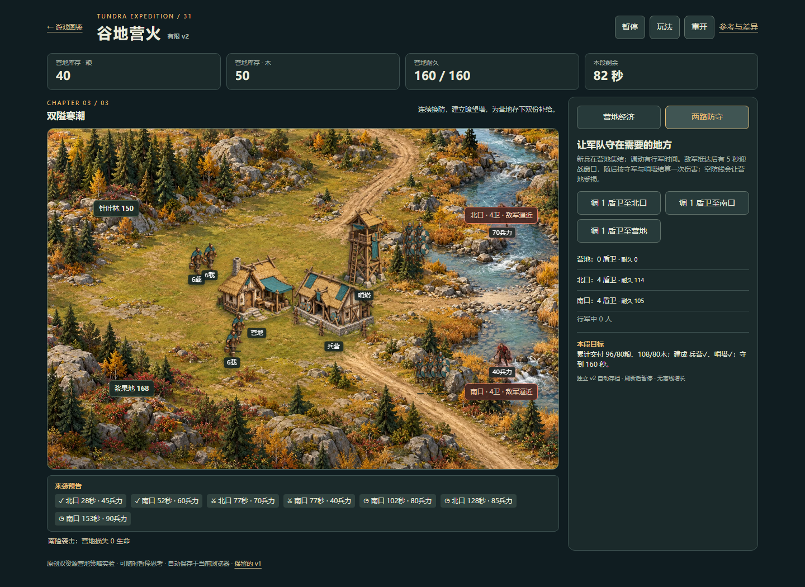
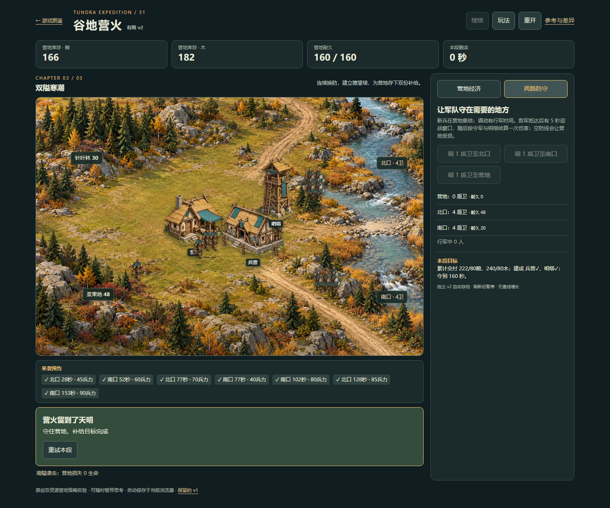
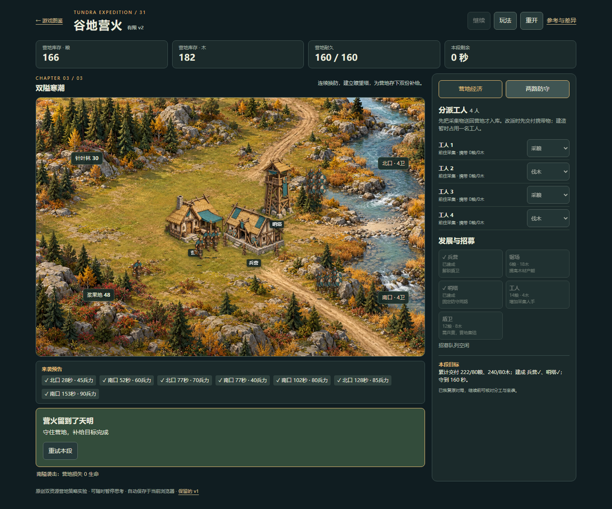

打开谷地营火 v2 · 游戏图鉴三段旅程，实际走到终点
2026-10-20 · 公开站桌面 Chromium · 正常资源与 UI 操作 · 文档补验。没有玩法或难度修改，不代表整体品质验收。
此前的显示修补后尚无完整三段 UI 证据。本轮从全新旅途连续完成120 / 140 / 160秒三段，并核对第三段双路袭击和最终刷新。
| 段落 | 结果 | 营地 | 累计粮 / 木 | 盾卫 |
|---|
| 1 河谷立营 | 胜利 | 160/160 | 216 / 180 | 6 |
| 2 林线争夺 | 胜利 | 160/160 | 246 / 228 | 6 |
| 3 双隘寒潮 | 胜利 | 160/160 | 222 / 240 | 8 |
兵营、采集、目标锯场、哨塔、招募与两路调兵均通过正常控件操作。每段恢复固定开局；第三段完成后没有第四段，刷新精确保留终态。已知策略指导的自动 UI 输入，不称为人工盲玩。离线模型与页面证据分开。
完整恢复轮次每段一次。较早轮次在第一段胜利、第二段开局后执行服务中断，原记录另存，未把中断算作游戏失败或后两段通过。控制台/页面错误 0；HTTP400+ 0；requestfailed 0。
完整方法与边界 · 公开 UI 原始记录 · 离线重放核对 · 保全记录
第一段 · 活动约40秒
第一段 · 完成
第二段 · 活动约87秒
第二段 · 完成
第三段 · 77秒双路袭击
第三段 · 完成
最终完成态 · 刷新后
未验：自然失败/重试、真机触屏、声音、多浏览器、性能、长期保存与审美。图片均为公开页面原生截图；没有拼接、重绘或把素材当作实玩帧。